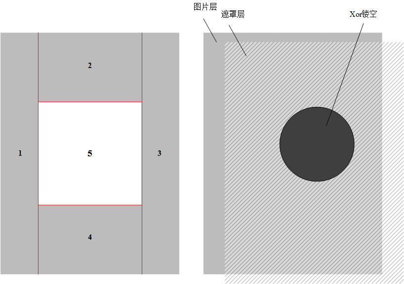
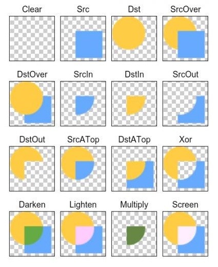

1、引言
在平时开发App过程中，用户需要设置头像的，从众多app的头像设置来看，基本可分为2中情况：1)圆形头像(如QQ,新浪微博等);2)矩形头像(如微信等).
其实也有好多高仿QQ截图或者微信头像截图的博文,但是都不是真正的高仿,只能作为一个参考,直接拿来用还不够完美,索性自己的也需要这个控件,自己动手写一个.
2、功能分析
该控件可通过属性设置头像的大小即中间截图区域的宽度或者半径(代码中通过设置左右边界padding来调节截图窗口),也可以通过手势缩放图片来进行选择你想要的区域,也支持双击图片可自动缩放大小,并且可以根据手指的移动图片的显示.
由上述功能可分析出,该控件像是有2个控件叠加的产生的效果,一个ImageView控件，一个中间镂空的透明层控件.
对于矩形截图框：我们可以按照以下结构图进行填充：将整个画布分为5部分,其中1-4部分利用设置画笔的透明度来进行填充.

对于圆形截图框：在Android在中绘制机制中有一个很神奇的类PorterDuffXferMode,如图所示,它可以利用两个画布的不同叠加模式得到不同的形状,上述控件的效果就可以使用这个类来实现.

3、RectOrCircleImageView实现
因为本文设计的控件可以通过用户的设置进行选择需要哪一种头像截图(圆形还是矩形),代码中对用RECT和CIRCLE,并提供外部可访问的方法对mType进行设置.
RectOrCircleImageView的具体实现分为三步，第一步先实现矩形头像截图；第三部实现圆形头像截图并添加一些手势操作；第三步实现图像截取以及双击图像变大变小.
3.1 矩形头像截图设计
实现矩形头像截图需要做的事情总的来说就是：在一张图片上镂空一个矩形区域，其他的区域“隐藏”。如结构图所示，我们将1-4区域用具有一定透明度的画笔进行绘制，第五部分的区域不管它就可以完成,具体步骤在代码中讲解：
上述代码中我们通过设置水平方向的边距mHorizontalPadding（默认是30,可通过属性进行设置）,根据边距计算出正方形的边长，接下来就是按照结构图分别绘制1、2、3、4四个区域，最后就是绘制我们的正方形区域的边界(其实就是绘制一个空心的矩形).
3.2 圆形头像截图设计
圆形的截图区域就不能直接用绘制的方式,因为系统没有提供这个格式的画笔啊,所以我们采用PorterDuffXferMode的Xor模式来进行镂空处理,具体就是在图片上(或者说是控件上)绘制一层遮罩层,这层有点像矩形截图区域中绘制的透明层一样,就是“掩盖”住原图,再在以控件的中心位置为圆点,绘制一个实心圆,这时设置一直画笔的PorterDuffXfermode模式为XOR,并再次在上面的实心圆上绘制同样大小的圆,这样就可以得到我们要的效果.
在上述代码中我们已经完成了矩形和圆形的设计,但在平时选择头像图像时都会放大或者缩小图片选择喜欢的区域,所以下面会通过手势缩放图像并添加手势移动图像的功能.
但是在图片第一次加载到控件时,为了视觉上的完美,需要将原始图片本身大小大于屏幕大小的图片缩放到屏幕大小并将其移动至屏幕中心处,这个过程需要在该控件还没有加载到ViewTree视觉树之前进行处理,即在onGlobalLayout()方法中对原图进行缩放并根据mWidthOrRadius计算出最小的缩放比例,若图片本身大小都小于mWidthOrRadius那么就不需要处理,具体细节看代码
上面函数的功能就是完成图片的缩放并移动到屏幕中心.
下面实现手势缩放,控件需要实现接口ScaleGestureDetector.OnScaleGestureListener,在其方法onScale中实现手势缩放功能.但是在缩放过程中如果没有边界判断,就会出现白色的空隙,如果移动到截图区域,给用户不好的体验,所以我们要以中心的截图区域为边界,若缩放之后的图片位置已经在截图框内,则会自动移动到截图区域边界处.
现在完成了图像的放大缩小,那么在放大之后我们想要移动图片进行区域选择,所以需要添加一个手指移动的公共.
控件实现接口View.OnTouchListener监听,并实现onTouch方法.在移动图像是也需要进行边界的判断,也不允许出现空白区域.
通过上述的代码可以进行图像的放大缩小,并移动图像选取用户感兴趣的区域.
3.3 双击图片变大并实现图像截取
在平时使用时,也会出现需要图片一瞬间变大变小的功能,在这里本控件也添加以双击图片变大的功能,放大范围分为3种:1)当前缩放比例在2以下的,双击后缩放至2倍大小;2)当前缩放比例大于2,双击后缩放至4倍大小;3)当前倍数已经为4时,则缩小到最初原始的大小并移动至屏幕的中心.
需要捕获控件的双击事件,则需要使用GestureDetector设置监听事件,我们这里只使用onDoubleTap这个回调方法,所以使用内部类SimpleOnGestureListener.
还有一个问题,如果在双击控件之后图片突然放大到某一倍数,会给用户一种不好的体验,所以在这里需要使用一个渐变缩放的过程,使用postDelayed执行一个Runnable线程,在线程中再根据当前的缩放值进行渐进缩放.
我们在构造函数中完成对GestureDetector的初始化,具体为：
具体的步骤在注释中已经详细写出,通过上面的代码,可以完成图片的双击放大缩小.到了基本的功能已经完成,还有一个给外部的截图方法.
根据当前设置的截图区域选择不同的截图方法,但是要实现我们刚开始的效果图,还需要进一步的包装.
在该控件的上面还有一个文本“截图”,这个用于触发截图方法.我们这里继承RelativeLayout布局,将本文的控件和这个截图文本包装在一起,具体为：
并且在RectOrCircleLayout中为了用户为RectOrCircleImageView添加图片、设置截图区域类型以及截图方法,添加了几个方法：
需要得到截取到的图像,在控件中一个回调接口实现,并让“截图”按钮实现这个接口.
4、使用实例
在布局文件中,添加控件.